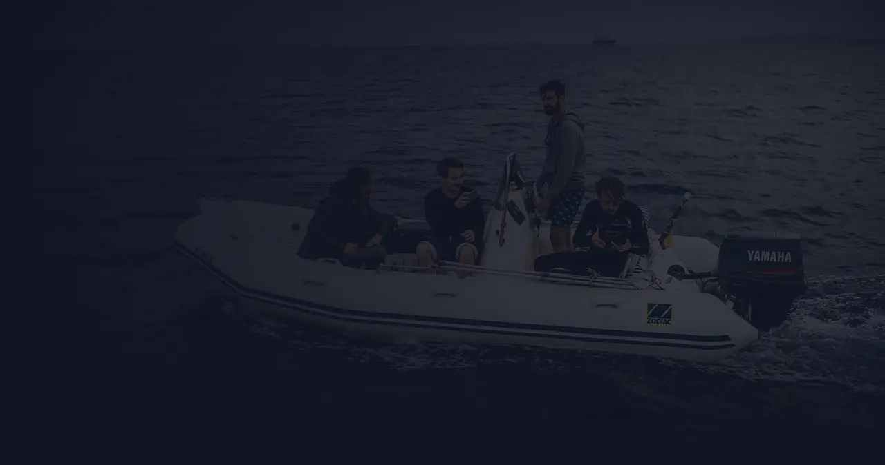
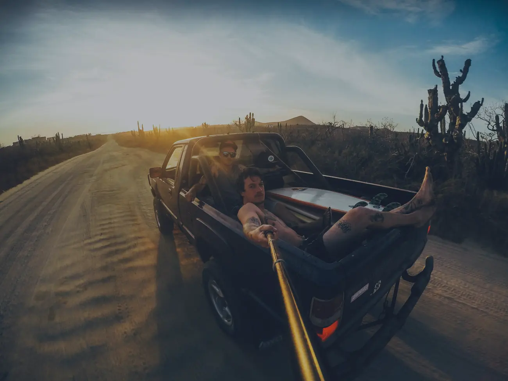
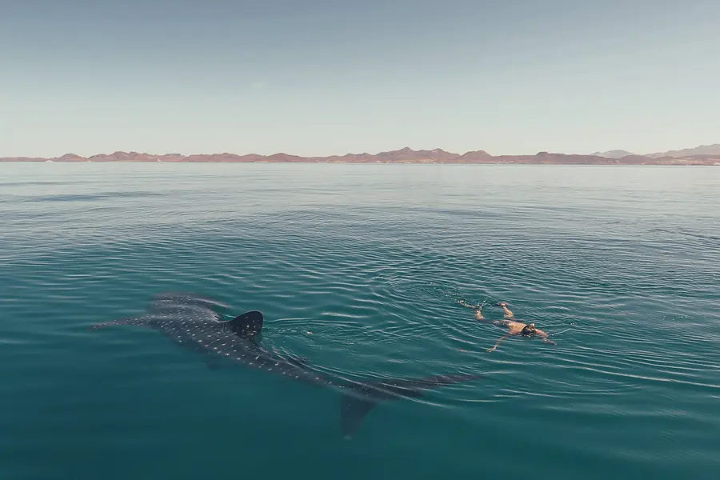
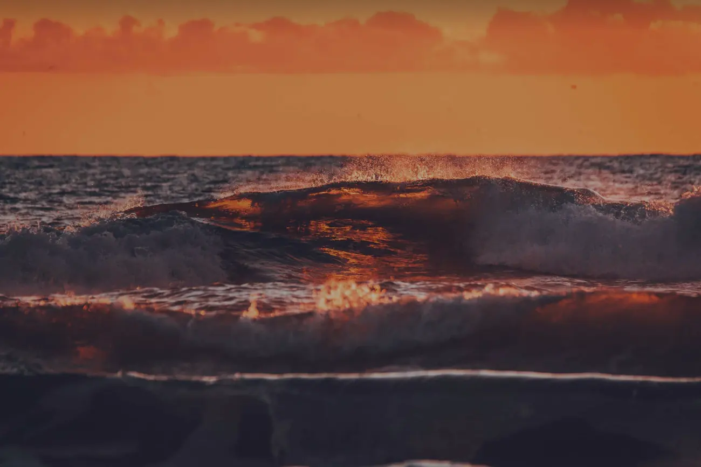
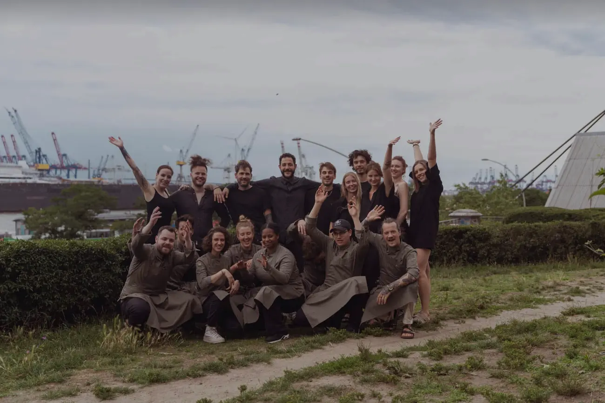

Reisen,surfen,kochen.Seit 2014.
Salt & Silver ist über die Jahre von einem Freundschaftsprojekt zu einer bekannten Marke gewachsen, aus „Cozy & Jo“ ist ein Team aus über 30 festen Mitarbeiter:innen geworden.

Was bishergeschah.
Wir haben drei Kochbücher geschrieben, betreiben drei Restaurants und haben eine eigene Delikatessen-Reihe entwickelt. Nur eine Konstante ist geblieben: Bei Salt & Silver dreht sich alles um die Leidenschaft zum Reisen, Surfen, Kochen.
Daran sind mittlerweile eine Menge weiterer Themen angeknüpft, die uns faszinieren: Wein, Gärtnern, Filme drehen und Fotografieren, Salsas und neue Gastronomiekonzepte entwickeln.



Fernweh, das manessen kann.

Cozy& Jo.
Cozy & Jo sind seit ihrer Jugend befreundet und irgendwie zusammen in das Abenteuer Salt & Silver gestolpert. Was als Freundschafts- und Leidenschaftsprojekt gedacht war, wurde zu einer Mission und Vision, die seit über einem Jahrzehnt andauert. Seit 2013 wachsen sie zusammen, scheitern zusammen, sind gemeinsam erfolgreich und nehmen jede Herausforderung an, der sie auf ihrem Weg begegnen.
Natürlich war nicht immer alles easy peasy. Aber in den Zeiten, in denen es den meisten Trouble gab, wurde unsere Freundschaft das, was sie heute ist.
Wenn man Freundschaft googelt, sollte das erste Bild von Cozy & Jo sein!
Gute Wellen,gutes Essen.





Im Team machtalles mehr Spaß.
Deshalb wollen wir unsere Mitarbeiter:innen an unserer Leidenschaft für fremde Esskulturen teilhaben lassen und organisierten eine Teamreise nach Tel Aviv. Dort besuchten wir ein Weingut, schlenderten über Märkte und überfielen eine Menge Restaurants auf der Suche nach neuen Geschmäckern und Rezepten.
Echte Begeisterung für fremde Esskulturen und ein kreativer, respektvoller Umgang mit den Ideen und Geschmäckern von anderswo: Das ist die Botschaft, die wir in unseren Restaurants vermitteln möchten.
Eine Mahlzeit ist die ehrlichste Form der Kommunikation.


Immer auf der Suche nachguten Wellen.
Drei Bücher,viele Reisen.
Wir waren über 18 Monate in Lateinamerika unterwegs und haben zwei Abenteuer-Kochbücher darüber geschrieben. Seit 2024 gibt es das dritte: Salt & Silver am Meer.


Eigene Felder seit 2018.
Seit 2018 arbeiten wir mit der Grünkorb Bioland Gärtnerei im Norden von Hamburg zusammen. Wir haben dort eigene Felder, um spezielle Chilis, saisonales Gemüse und alle Arten von Kräutern anzubauen, die hier normalerweise nicht vorkommen.
Schritt für Schritt arbeiten wir daran, unsere Restaurants so umweltschonend wie möglich zu gestalten. Wir sind noch nicht dort, wo wir uns gerne sehen würden, aber wir tun unser Bestes.
Life is shortmake it nice!
Aus „Cozy & Jo“ ist ein Team aus über 30 festen Mitarbeiter:innen geworden.
Komm ins Team
Aus zwei wurdenüber dreißig.